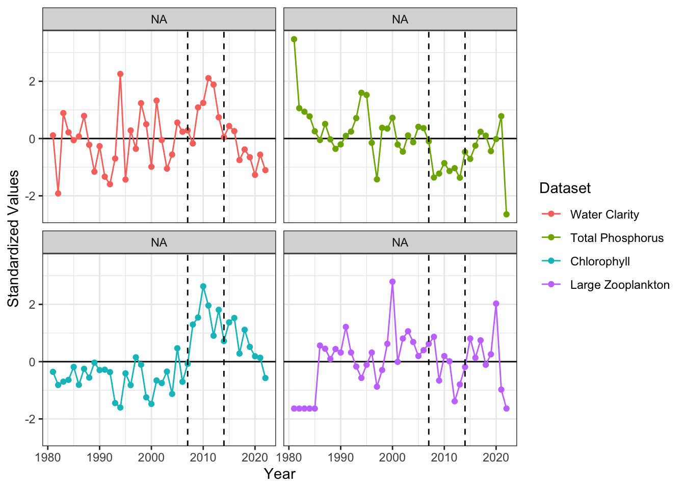
Appendix 1: Trout Lake
Appendix 1: Trout Lake
Overview
Here we show the LM, and GAM analysis for the Trout Lake dataset. For complete code, see the full quarto document
Approach for running LTER-NTL Trout Lake data using temporally structured GAMs and linear regression models with time periods defined a-priori.
First we start with looking at three time periods using linear regression models:
The historical regime with low water clarity
A clear water regime where the introduction of Lake Trout into the system from stocking in 2006.
A novel regime following the introduction of invasive, predatory water flea (Bythotrephes) in 2014 which lead to a reversion of water clarity to a less clear state.
To examine this we start by looking at a few key food web conditions using intercept only models through time:
Water clarity
Phosphorus - which impacts water clarity and is a common bottom-up process that could impact water clarity and we examine as an alternative hypothesis to the top down processes of Lake Trout and invasive speceis.
Abundance of large zooplankton Daphnia and Calanoids
Chlorophyll
LM
We approach this by fitting a linear model with the a priori time periods as a factor and compare AIC to a single intercept model for each variable.
We find that water clarity, chlorophyll, and large zooplankton abundance are all better explained by a model that includes a priori defined time periods improves model fit (@supptab-AIC). This indictes that the means for these variables change through time. By examining the time series plot (@suppfig-TS) we can see that large zooplankton and water clarity appear more correlated after 2006, when Lake Trout were stocked in the system. This aligns with our hypothesis that the introduction of top down control in the system has made large zooplankton abundance more tightly coupled with water clarity.
Next we consider whether there are changing relationships between water clarity and these ecosystem dynamics by including a slope parameter and its interaction with time period. We only include an investigation into large zooplankton-water clarity relationship in the main text, but here we also explore chlorophyll-water clarity.
Both chlorophyll and large zooplankton best explain water clarity with a time-varying relationship model, rather than a time-varying abundance model. We can look at the model residuals to see how they compare for a time-varying model versus a time-invariant model. Using the large zooplankton covariate as an example, we can see in the timeseries of residuals (@suppfig-lmresid) that there is a temporal trend, supporting a temporally structured model. We find the q-q plot is similar across the models (@suppfig-lmqq) and are mostly okay.
Next, we examine how these relationships change through time, with a focus on large zooplankton.
We can see from these results that there was a weak relationship from 1980 - 2006 between zooplankton abundance and water clarity, that switched to a strong, positive relationship in 2007 - 2014 as large zooplankton were released from top down pressure, and a slightly stronger relationship after 2014 with the introduction of Bythotrephes (@suppfig-fit & @supptab-coef).
GAM
If we take the Zooplankton-water quality relationship and fit a temporally structured GAM and compare it to the linear model, we find similar results. Both predictions also acccurately identify 2006 as a breakpoint and a second break point in 2016, although the GAM indicates that the slope of this relationship is a continuously changing trend (@suppfig-slope) and the intercept more closely tracks abundance (@suppfig-int).
We can do similar residual diagnostics with the GAM model used. We can see that in a model that does not include a smooth by year term, there is a temporal trend in the residuals, but this is resolved when a smooth by year is implemented (@suppfig-gamresid). There doesn’t appear to be issues with the QQ plots for any specification (@suppfig-gamqq).
DLM
For completeness, we also show the slope estimates and model fits for a DLM. We discuss the approach for a DLM in greater detail in Appendix 2: Lake Washington Analysis. Briefly, we find that all three modeling approaches have similar slope estimates (@suppfig-dlmSlope) and fitted values (@suppfig-dlmFit) using all three modeling approaches.
Figures & Tables
Standardized time series of ecological conditions observed in Trout Lake.
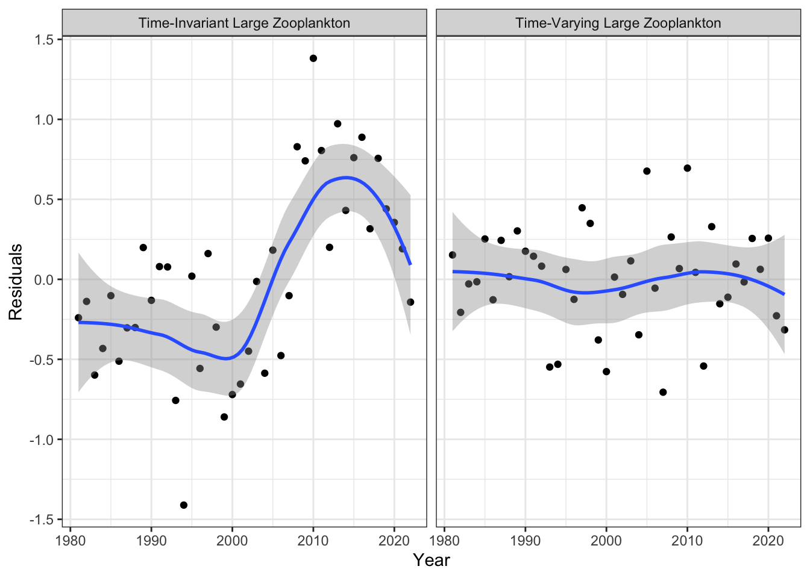
Model residuals for the time-varying water clarity - zooplankton model compared to a time-invariant model where large zooplankton is used as a covariate without a priori defined time peariods
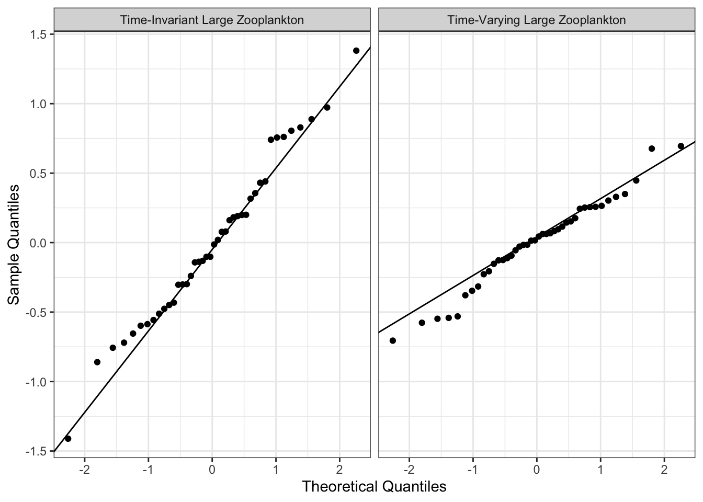
Q-Q plot for the time-varying water clarity - zooplankton model compared to a time-invariant model where large zooplankton is used as a covariate without a priori defined time peariods
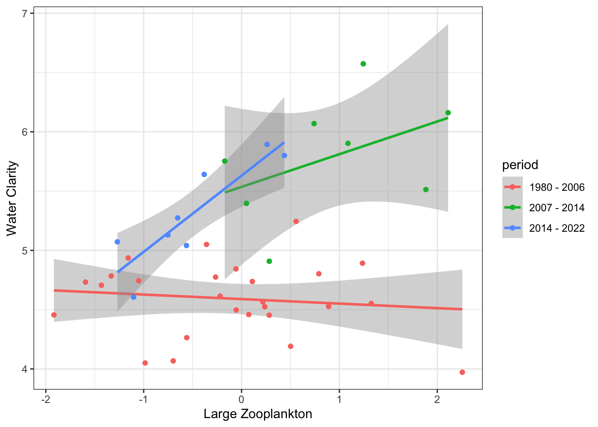
Relationship between large zooplankton abundance and water clarity for three time periods defined a priori.
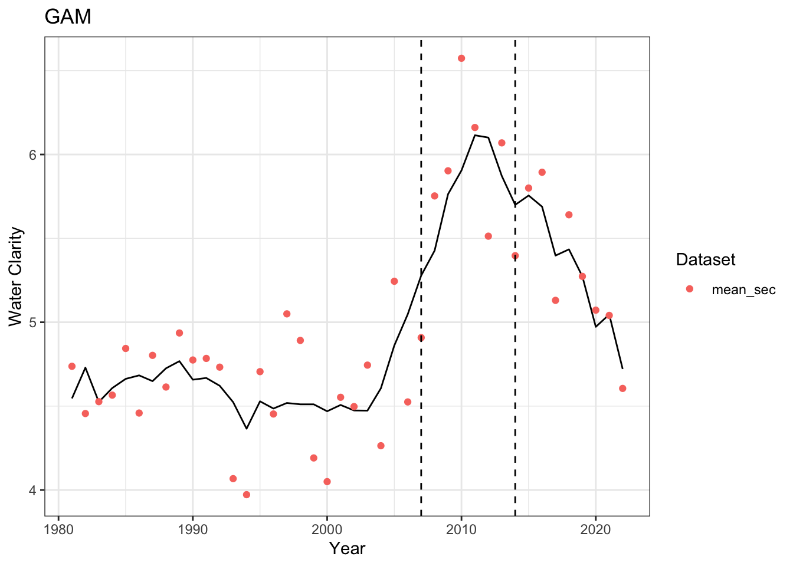
Predicted values of water clarity (black line) compared to observed values (red points) using a time-varying relationship with zooplankton abundance.
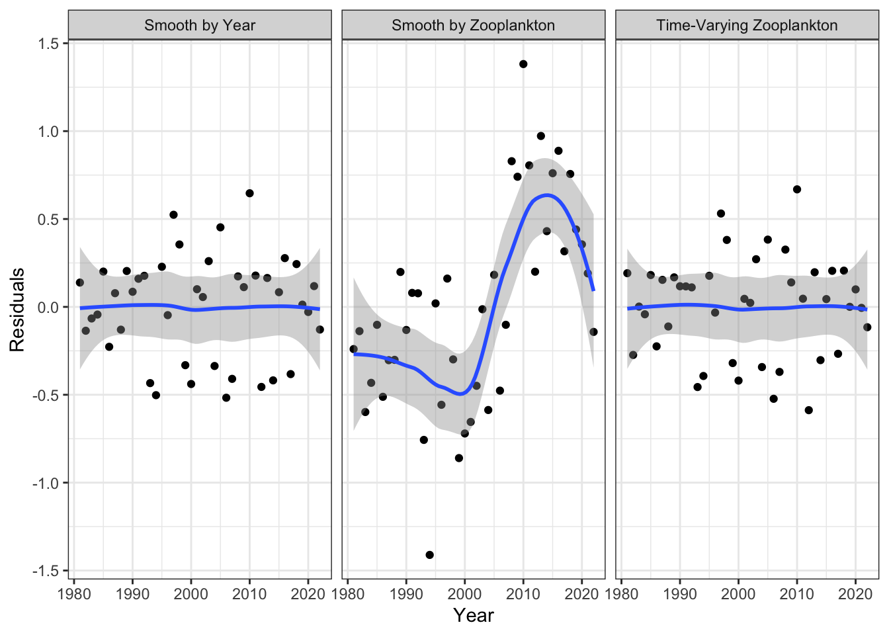
Model residuals for a smooth on zooplankton abundance, a smooth on year, and a smooth on year by zooplankton.
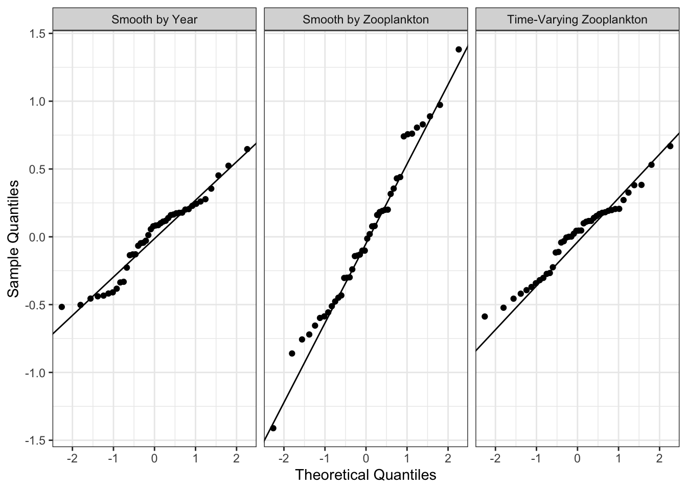
Q-Q plot for a smooth on zooplankton abundance, a smooth on year, and a smooth on year by zooplankton.
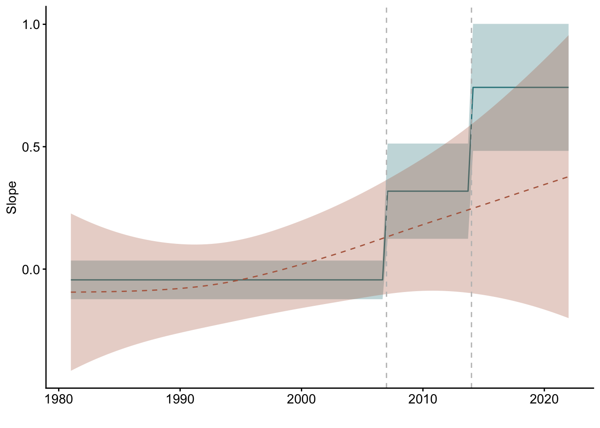
Estimates of the slope of the relationship based on a time-varying LM (blue) and a time-varying GAM (red)
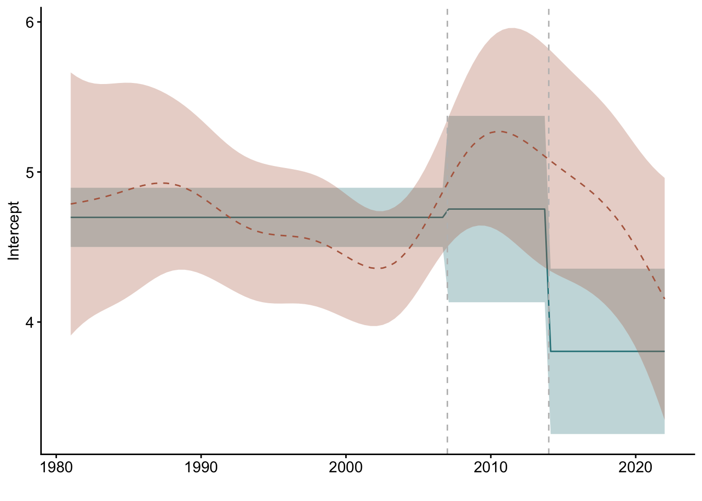
Estimates of the intercept of the relationship based on a time-varying LM (blue) and a time-varying GAM (red)
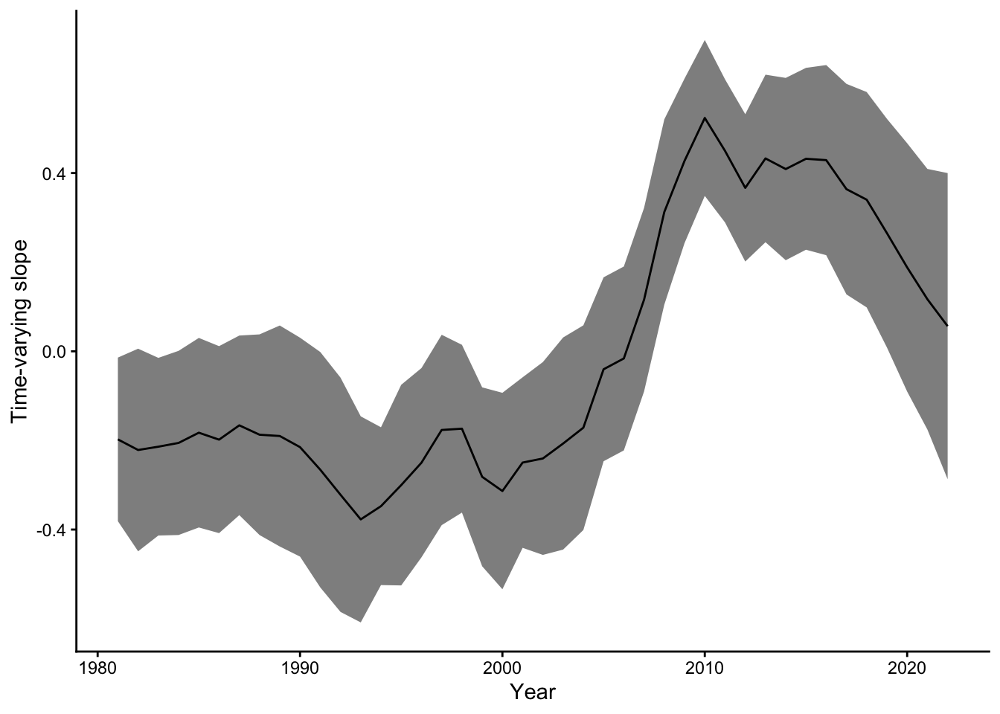
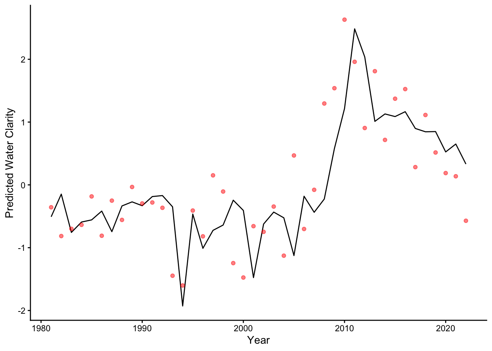
| Variable | No.Period.AIC | Period.AIC | Best.Model |
|---|---|---|---|
| Water Clarity | 122.18 | 83.43 | Period |
| Total Phosphorus | 122.18 | 125.75 | No difference |
| Chlorophyll | 122.18 | 111.00 | Period |
| Large Zooplankton | 122.18 | 115.84 | Period |
AIC values comparing linear models with a priori defined time periods (time-varying model) and no time period (time-invariant model)
| Covariates | Period | Interaction |
|---|---|---|
| Chlorophyll | 43.99 | 39.56 |
| Total Phosphorus | 44.45 | 46.31 |
| Large Zooplankton | 43.58 | 35.99 |
AIC values comparing linear models comparing time-varying abundance models versus time-varying relationship models
| term | Estimate | Std. Error | t value | Pr(>|t|) |
|---|---|---|---|---|
| (Intercept) | 4.70 | 0.20 | 23.80 | 0.00 |
| Large | -0.04 | 0.08 | -0.56 | 0.58 |
| as.factor(period)2 | 0.06 | 0.62 | 0.09 | 0.93 |
| as.factor(period)3 | -0.89 | 0.55 | -1.62 | 0.11 |
| Large:as.factor(period)2 | 0.36 | 0.19 | 1.86 | 0.07 |
| Large:as.factor(period)3 | 0.79 | 0.26 | 3.03 | 0.00 |
Model coefficients for the time-varying relationship model between large zooplankton and water clarity